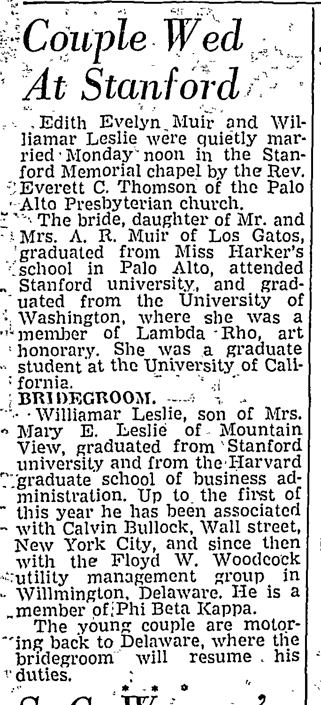

Edith Evelyn Muir 1916–2018
Great-grandmother of Genevieve Elisa Symanski Nelson, wife of Peter.
Edith Evelyn Muir was born on 21 Dec 1916 (according to the family's 2015 tree)1, the daughter of Andrew Muir and Ruby Pershbaker3,4,5. She married Williamar Leslie on 2 Jun 1941 in California, United States6,7. She died on 8 Feb 2018 in Oregon, United States2.
Family
- Parents
- Andrew Muir and Ruby Pershbaker d. 1973 documented
- Husband
- Williamar Leslie 1913–1992 · married on 2 Jun 1941 in California, United States6,7
- Children
- Lael Leslie documented
- Lorin Dale Leslie b. 1948 documented
- Lann Daniel Leslie b. 1955 documented
Life events
| Event | Date | Place and details |
|---|---|---|
| Born | 21 Dec 1916 | According to the family's 2015 tree1 |
| Married | 2 Jun 1941 | with Williamar Leslie California, United States6,7 |
| Died | 8 Feb 2018 | Oregon, United States2 |
Records



Sources
- Peter's tree, danenberg.sql, 2007–2015, personae 103, birth.
- Obituary: Edith Evelyn Leslie (Dec. 21, 1916 – Feb. 8, 2018), The World (Coos Bay, Oregon), 17 February 2018.
Dec. 21, 1916 – Feb. 8, 2018 At Edith's request, there will be no service for Edith Evelyn Leslie, 101, formerly of Bandon. She died Feb. 8, 2018 at home in Eugene. The descendant of pioneers in Coos County, Edith loved spending most of her retirement living on the family ranch near Bandon. She was born Dec. 21, 1916, in Oakland, Calif., to Andrew Robertson Muir and Ruby Edith (Pershbaker) Muir. An only child, she was raised in the countryside near Los Gatos where her favorite playmates were her beloved dogs, cats, ducks and geese. After graduating from a preparatory school for young ladies, Edith became one of the first women to enter Stanford University, where she studied art. She earned a liberal arts degree from the University of Washington in 1937 and her teacher's credential from the University of California at Berkeley in 1938. She married Williamar Leslie, a fellow Stanford student from Mountain View, Calif., June 2, 1941, in the Stanford Memorial Chapel. They made their first home in Wilmington, Dela., and Williamar commuted to his job as a market analyst on Wall Street until a position with U.S. Steel in San Francisco, Calif., brought them back to the West Coast. Edith and Williamar lived in Berkeley, Calif., where Edith taught English to recent immigrants. They raised three children, Lael, Lorin, and Lann, in a home filled with parrots, iguanas, geese, geckos, lizards and Edith's art work. When Williamar retired in 1969, they decided to build a house on the Coquille River ranch that Edith's grandfather Adam Pershbaker, a mill owner and the founder of Prosper, had purchased shortly before she was born.
Died Thursday, 8 February 2018 at home in Eugene, Oregon (living with her son Lann Leslie and his wife Melody), age 101, from complications of head injuries sustained in an accidental fall in late January; born 21 December 1916 in Oakland, California, only child of Andrew Robertson Muir and Ruby Edith (Pershbaker) Muir; raised near Los Gatos, studied art at Stanford University, earned a B.A. from the University of Washington in 1937 and a teaching credential from UC Berkeley in 1938; married Williamar Leslie on 2 June 1941 at Stanford Memorial Chapel; lived in Wilmington, Delaware, and Berkeley, California (raising children Lael, Lorin, and Lann) before retiring in 1969 to the Coquille River ranch near Bandon purchased by her grandfather Adam Pershbaker; received the National Wetlands Conservation Award from the U.S. Department of Fish and Wildlife in 1995.
- Peter's tree, danenberg.sql, 2007–2015, parentages 23.
- Couple Wed At Stanford, San Jose Mercury Herald (San Jose, California), 4 June 1941, p. 8.
Edith Evelyn,Muir and Wil- iiamar Leslie were quietly married-Monday'noon in the Stanford Memorial chapel by the Rev. : Everett C. Thomson of the Palo ■ Alto Presbyterian church. “The bride, daughter of Mr. and - i Mrs. A. R. Muir of Los Gatos
father: Andrew Muir; mother: Ruby Pershbaker
- Obituary: Edith Evelyn Leslie (Dec. 21, 1916 – Feb. 8, 2018), The World (Coos Bay, Oregon), 17 February 2018.
She was born Dec. 21, 1916, in Oakland, Calif., to Andrew Robertson Muir and Ruby Edith (Pershbaker) Muir. An only child, she was raised in the countryside near Los Gatos
father: Andrew Muir; mother: Ruby Pershbaker
- Couple Wed At Stanford, San Jose Mercury Herald (San Jose, California), 4 June 1941, p. 8.
Edith Evelyn,Muir and Wil- iiamar Leslie were quietly married-Monday'noon in the Stanford Memorial chapel by the Rev. : Everett C. Thomson of the Palo ■ Alto Presbyterian church. “The bride, daughter of Mr. and - i Mrs. A. R. Muir of Los Gatos, 'graduated from Miss I-Iarker’s ^school in Palo Alto, attended „ Stanford university, and grad- ' uated from the University of • Washington, where she was a member of Lambda Rho, art ! honorary. She was a graduate •> student at the University of Cali- : fornia.
Translation: Edith Evelyn Muir and Williamar Leslie were quietly married Monday noon in the Stanford Memorial chapel by the Rev. Everett C. Thomson of the Palo Alto Presbyterian church. The bride, daughter of Mr. and Mrs. A. R. Muir of Los Gatos, graduated from Miss Harker's school in Palo Alto, attended Stanford university, and graduated from the University of Washington, where she was a member of Lambda Rho, art honorary. She was a graduate student at the University of California.
Married Williamar Leslie at noon on Monday, 2 June 1941 in the Stanford Memorial Chapel, officiated by the Rev. Everett C. Thomson of the Palo Alto Presbyterian Church (marriage license issued in San Jose, 30 May 1941, listing Williamar Leslie, 27, of Wilmington, Delaware, and Edith Evelyn Muir, 24, of Los Gatos); daughter of Mr. and Mrs. A. R. Muir of Los Gatos; graduated from Miss Harker's School in Palo Alto, attended Stanford University, graduated from the University of Washington (where she was a member of Lambda Rho art honorary), and was a graduate student at the University of California.
- Couple Wed At Stanford, San Jose Mercury Herald (San Jose, California), 4 June 1941, p. 8.
BRIDEGROOM. --v - -Williamar Leslie, son of Mrs. » Mary E. Leslie of Mountain View, graduated from ' Stanford university and from theTIarvard '.'■/graduate" school of business administration. Up to the first of " this year he has been associated - with Calvin Bullock, Wall street, New York City, and since then with the Floyd W. Woodcock '“utility management group in - Willmington, Delaware. He is a ..member ofiPhi Beta Kappa. The young couple are motor- "ing back to Delaware, where the bridegroom will resume . his v duties.
Translation: BRIDEGROOM — Williamar Leslie, son of Mrs. Mary E. Leslie of Mountain View, graduated from Stanford university and from the Harvard graduate school of business administration. Up to the first of this year he has been associated with Calvin Bullock, Wall street, New York City, and since then with the Floyd W. Woodcock utility management group in Wilmington, Delaware. He is a member of Phi Beta Kappa. The young couple are motoring back to Delaware, where the bridegroom will resume his duties.
Son of Mrs. Mary E. Leslie of Mountain View, California; graduated from Stanford University (where he was awarded a Converse scholarship in May 1934 and elected to Phi Beta Kappa) and from the Harvard Graduate School of Business Administration; worked with Calvin Bullock on Wall Street in New York City until 1 January 1941, and thereafter with the Floyd W. Woodcock utility management group in Wilmington, Delaware; married Edith Evelyn Muir on Monday, 2 June 1941 in the Stanford Memorial Chapel.